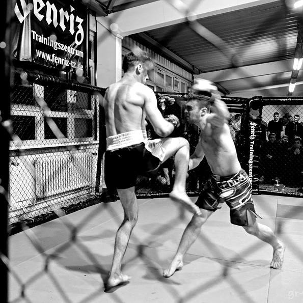

Mixed Martial Arts (MMA) has been one of the fastest rising sports in the world for the better part of the last two decades. In modern times, it is a mainstream sport that enjoys a massive following from millions of people all over the world in all continents. Modern day MMA came to prominence in the early 1990’s, when the Ultimate Fighting Championship was established in the United States, inviting the world’s best fighters to compete in the Octagon to determine who reigned supreme. But the sport has been around much longer than that and shares its origins during man’s early history. At its core, MMA is an amalgamation of all combat disciplines, harmoniously combined together to form a seamless, unified system. Some say it is the purest form of unarmed combat because it takes the greatest elements of various martial arts and mixes them together. Many fans have fallen in love with MMA’s undeniable allure, and today the sport has grown as big as any, rivaling that of other sports like basketball and football. Let’s examine how the sport came to be, where it all started, and where it is headed. Today, Evolve Vacation shares the origins as well as the rich and colorful history of MMA.

The Ancient History of MMA
Although MMA was said to have been born in the late 19th century, there are records of certain martial arts that held MMA concepts dating back to ancient civilization. The concept of bringing together multiple forms of fighting is certainly not new and can be traced way back in the early history of man. One of the earliest forms of MMA originated from the Han Dynasty in ancient China, developed by the Chinese military as a form of hand-to-hand combat to be used in warfare. The art was called Shuai Jiao, and combined styles such as wrestling and kung fu. It was one of the first martial arts to marry both striking and grappling techniques including kicking, punching, throwing, and various joint locks. Ancient Greece also had their own adaptation called Pankration, combining elements of striking and grappling which was much similar to modern day MMA. Pankration brought together the arts of wrestling and boxing and introduced the sport as early as the 33rd Olympiad in 648 BC. In Pankration, all strikes and holds were allowed with a few exceptions which included biting and eye-gouging. Matches were contested between two fighters and went on until one fighter could no longer continue or had submitted. Later on, Pankration was passed on to other cultures such as the ancient Romans. Throughout the years, more and more countries began experimenting with their own martial arts, and the concept of mixing fighting styles was becoming common. MMA soon quickly spread throughout the world including Europe and the west.
MMA in the 18th and 19th Century
In the mid 19th century, French Savate practitioners challenged fighters who practiced other martial arts, with the aim of testing their combat techniques. A tournament was held in 1852 between French Savate fighters and English bare-knuckle boxers. The fascination with testing martial art versus martial art continued for the next few years, and soon, the concept of MMA began to catch on with the rest of the world. The first ever martial art that was known to have combined European combat styles with Asian arts is called Bartitsu, which was founded in London in 1899 by Edward William Barton-Wright. It fused various elements of catch wrestling, Judo, western boxing, Savate, and Jiu-Jitsu. Naturally, with the rise in popularity of MMA concepts, history has seen many mixed style tournaments take place. In 1963, legendary judoka and wrestler “Judo” Gene Lebell, who would years later train popular female MMA fighter “Rowdy” Ronda Rousey, fought professional boxer Milo Savage in a no-holds-barred fight. Lebell defeated Savage with a rear naked choke to leave him unconscious. It was the first televised mixed style fight in the United States. In the same year, three Kyokushin Karate practitioners from Japan traveled to Thailand and fought at the prestigious Lumpinee Boxing Stadium against three Muay Thai fighters. In the late 1960’s and early 1970’s, martial artist turned Hollywood actor Bruce Lee, nicknamed “The Dragon”, became world-famous for his incredible martial arts skill. He had developed his own unique style called Jeet Kune Do, which again carried the concept of MMA in mixing everything that worked in all martial arts together to form a single cohesive style of fighting. Many pundits consider Jeet Kune Do to be the precursor of the sport that we now know today, and Lee is considered by many to be the “Father of Modern Day MMA”.
Modern-Day Mixed Martial Arts
The development in martial arts that led to the establishment of both the American and Japanese MMA scene is one that saw the rise of Brazilian Jiu-Jitsu. Things kicked off in the early 1900’s when Carlos and Helio Gracie, founding fathers of the renowned Gracie fighting family who had invented Brazilian Jiu-Jitsu, issued the “Gracie Challenge”, which were held in various gyms. Fighters from all over the world would travel to Brazil to accept the Gracie challenge, but would often lose because they had never experienced this high-level grappling technique before. This legend planted the seed of thought that would later manifest itself into modern MMA. In 1993, theUFC was established, with the promotion holding its first event ever on November 12 of that year, at the McNichols Sports Arena in Denver, Colorado. With an audience of nearly 8,000 people, the UFC held a one-day, eight-man tournament with no weight classes, no rounds and no breaks in fighting, as well as no judges. The only two rules were no biting and no eye-gouging. Matches could only end by submission, knockout, or corner stoppage via towel throw. The tournament was won by Royce Gracie, son of Helio, who received $50,000 for his victory. Fast forward two decades later, and MMA, as we know it today, is one of the biggest sports in the world. Aside from the UFC, there are now also many large global MMA organizations such as ONE Championship in Asia, and Bellator MMA in the United States. Today, after many rule changes and iterations, MMA is a highly-regulated sport with a robust rule set that has made the sport safer for competing athletes while still maintaining the raw excitement and spirit of mixed style combat.